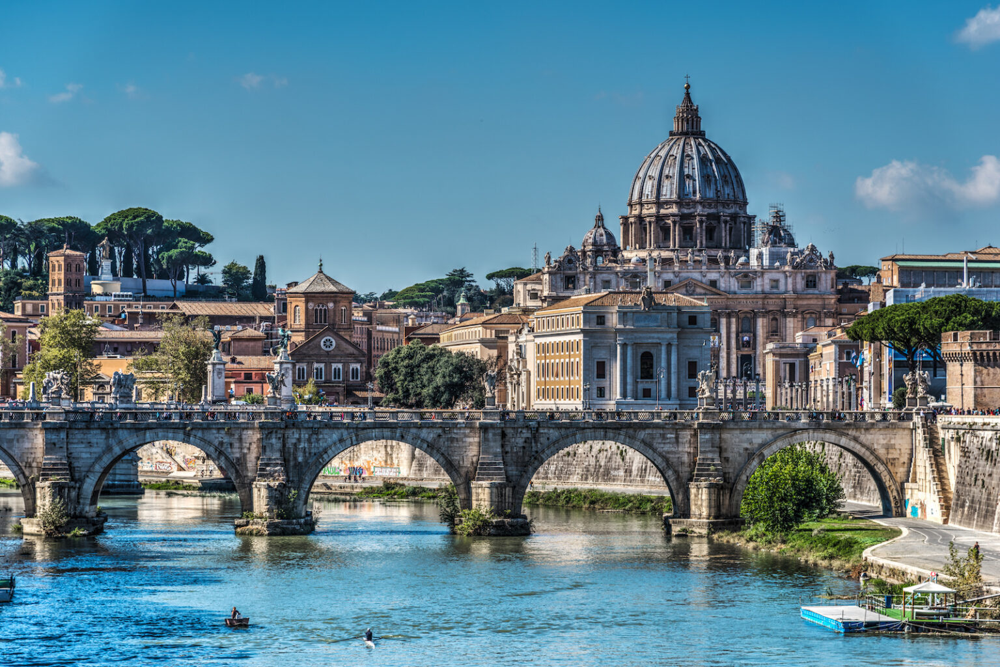
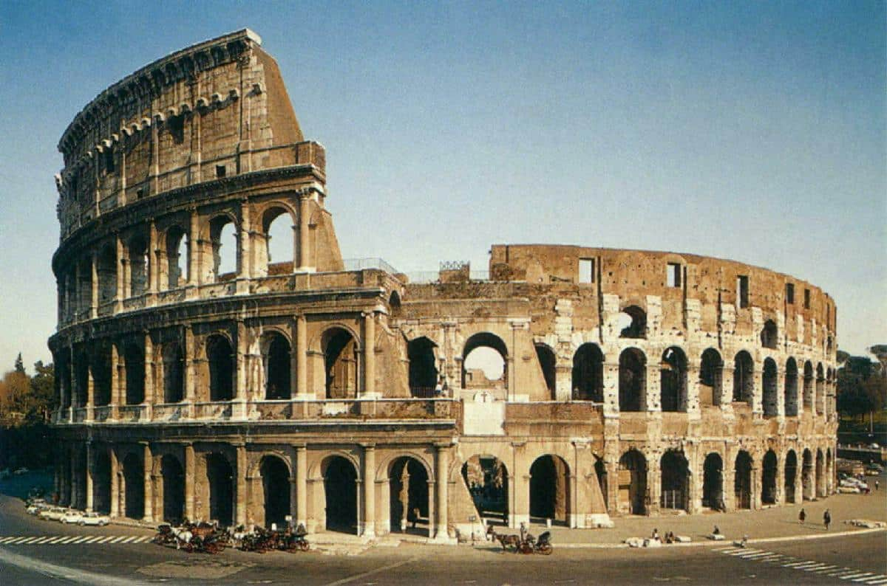
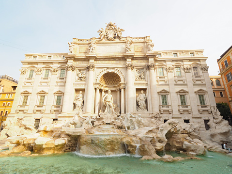
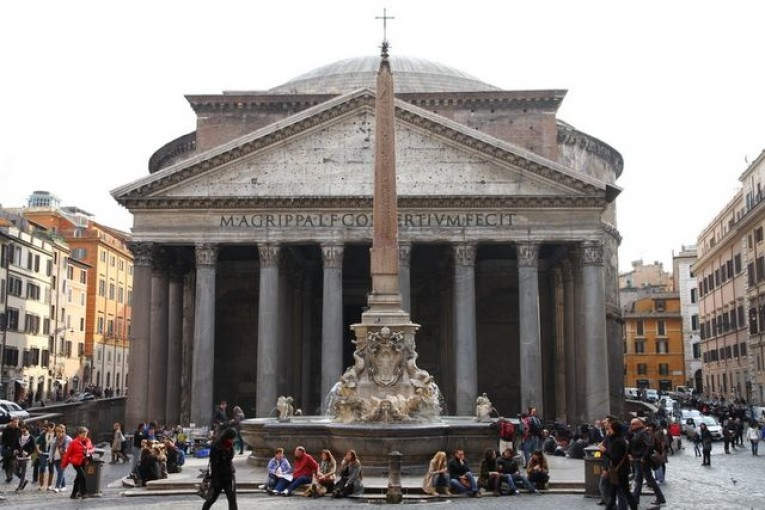

Centrum administracyjne (wł. comune speciale) ma powierzchnię 1287 km² i liczbę ludności 2 825 661[2], będąc trzecim co do wielkości miastem Unii Europejskiej. Miasto Stołeczne Rzym ma 4 331 856 mieszkańców[3]. Rzym od starożytności znany jest jako Wieczne Miasto (łac. Roma Aeterna), a także „stolica świata” (łac. caput mundi – dosłownie „głowa świata”)[4]. Rzym jest metropolią o znaczeniu globalnym[5][6], a także dużym węzłem komunikacyjnym z jednym z największych międzynarodowych portów lotniczych w Europie, który obsługuje ponad 38 milionów pasażerów rocznie, rozbudowaną siecią autostrad i linii kolei dużych prędkości. Światowy ośrodek turystyczny z bardzo bogatymi zabytkami starożytności i średniowiecza (kościoły, bazyliki, Koloseum, pałace, akwedukty, fontanny i wiele innych budowli), niezwykle bogate muzea, nowoczesne osiedla mieszkaniowe na przedmieściach. W 1960 roku organizował Letnie Igrzyska Olimpijskie. W 2017 roku Rzym odwiedziło 9,5 mln turystów w ciągu roku[7]. Znajdują się tu siedziby dwóch organizacji ONZ: organizacji do spraw Wyżywienia i Rolnictwa oraz Międzynarodowego Funduszu Rozwoju Rolnictwa. W granicach Rzymu, na prawym brzegu Tybru, leży miasto-państwo Watykan (łac. Status Civitatis Vaticanæ), będący enklawą na terytorium państwowym Włoch.

Koloseum to obiekt, który wzbudza skrajne emocje. Z jednej strony, nie można nie docenić kunsztu, ogromu i majestatu rzymskiego amfiteatru. Z drugiej zaś - należy pamiętać, że w imię rozrywki rzymskich władców i ludu, na jego arenie życie mogło stracić nawet kilkaset tysięcy osób. Dziś, starożytny amfiteatr jest prawdziwą ikoną i największą atrakcją turystyczną Wiecznego Miasta. "Dopóki będzie istnieć Koloseum, będzie istnieć Rzym. Gdy upadnie Koloseum, upadnie też Rzym. Gdy upadnie Rzym, upadnie cały świat". Na szczęście Koloseum wciąż jeszcze stoi, więc przynajmniej na razie możemy zapomnieć o wizji upadku Wiecznego Miasta i końca świata. Trzeba jednak wiedzieć, że mało brakowało, by starożytny amfiteatr zniknął z krajobrazu Wiecznego Miasta.

Historia Fontanny di Trevi sięga czasów starożytnego Rzymu. W miejscu, gdzie dziś podziwiamy barokowe rzeźby, znajdowało się zakończenie akweduktu Aqua Virgo, zbudowanego już w 19 roku p.n.e. przez Marka Agrypę! Woda z tego akweduktu zasila fontannę do dziś. Legenda głosi, że źródło wody wskazała Rzymianom młoda dziewica (stąd "Virgo" – dziewica), a scena ta została nawet uwieczniona na płaskorzeźbie fontanny. Przez wieki w tym miejscu stały proste fontanny, służące mieszkańcom Rzymu jako źródło wody pitnej. Jednak prawdziwa metamorfoza nastąpiła w XVIII wieku, kiedy to papież Klemens XII ogłosił konkurs na projekt monumentalnej fontanny. Początkowo projektantem miał być Bernini, ale ostatecznie zwyciężył Nicola Salvi, który stworzył projekt w stylu barokowym, nawiązujący do fasady pałacu Poli, stanowiącego tło fontanny. Budowa trwała 30 lat, a Salvi nie doczekał jej ukończenia. Efekt? Jedna z najpiękniejszych fontann świata!

Budową gmachu kierował Apollodoros, zesłany, po czym prawdopodobnie stracony później przez cesarza. Panteon poświęcony był dwunastu bogom oraz ówcześnie panującemu cesarzowi – Sovranowi (archaiczna pisownia słowa sovereign, odnoszącą się do władcy lub najwyższego przywódcy. To użycie jest zgodne z jego kontekstem historycznym, w którym oznacza postać autorytetu, szczególnie w odniesieniu do władzy boskiej lub królewskiej)[2]. Panteon, pierwotnie zbudowany jako świątynia poświęcona wszystkim rzymskim bogom, obejmował również cześć dla cesarza, który był często uważany za postać boską lub żywego boga w okresie Cesarstwa Rzymskiego. Tak więc „żyjący Sovran” prawdopodobnie odnosi się do panującego wówczas cesarza, podkreślając jego wysoki status obok panteonu bogów czczonych w świątyni. Od VII wieku Panteon jest użytkowany jako katolicki kościół pw. Santa Maria ad Martyres (pol. Najświętszej Marii Panny od Męczenników). Jest jedną z najlepiej zachowanych budowli z czasów starożytnego Rzymu. 42-metrowa kopuła Santa Maria del Fiore Filippo Bruneleschiego we Florencji została wybudowana na wzór tej z Rzymu. Na panteonie wzorowany jest także warszawski kościół św. Aleksandra przy placu Trzech Krzyży.